Antes do início da década, o tempo ideal de uso de telas já era algo muito discutido. Porém, com a pandemia do Coronavírus em 2020, houve um aumento considerável do uso de telas, graças a fatores como o “lockdown”. Eventualmente, tópicos abordando os malefícios de passar tanto tempo exposto a telas surgiram, e se tornaram bastante populares nos tempos atuais. Com novos tópicos, surgem palavras desconhecidas, por exemplo, o que seriam “neurotransmissores?”
Neurotransmissores
Neurotransmissores são substâncias químicas produzidas pelos nossos neurônios, que servem para passar sinais entre as células e permitir que diversas coordenações e funçõe corporais aconteçam.
-
Adrenalina Sensação de fuga ou luta
Endorfina Sensação de dor ou euforia
Noradrenalina Ajuda na concentração e no estado de alerta
Acetilcolina Ajuda na aprendizagem
GABA Traz sensação de calma
Ocitocina Sensação de "amor"
Dopamina Traz a sensação de felicidade e prazer
Glutamato Ajuda na memória e aprendizagem
Serotonina Ajuda no humor e no bem-estar
Como a dopamina funciona?
Dentre esses Neurotransmissores, temos alguns muito conhecidos, como a adrenalina, endorfina e ocitocina, e claro; a dopamina
Este neurotransmissor é produzido pelo nosso cérebro no chamado "circuito de recompensa"
(ou
sistema mesolímbico, nos termos técnicos),
ele atua no humor, aprendizado, motivação,
prazer, dentre outras coisas
Liberamos dopamina sempre que algo que o nosso cérebro interpreta como prazeroso acontece; comer algo que você goste, exercícios físicos, e é aí que o uso de telas entra na história.
Como o nosso cérebro processa isso?
O nosso cérebro rapidamente aprende quais são as atividades que nos dão mais dessa substância.
As redes sociais foram pensadas e projetadas com base em estudos sobre psicologia comportamental, com a intenção de que o usuário sinta prazer ao usar e fique imerso por horas na tela.
E assim, mais uma peça entra: Os Esquemas de Reforço! Com base nos estudos do especialista em comportamento Burrhus F. Skinner. Esse esquema ensina o nosso cérebro pelo o que vai acontecer depois da ação. Então se a consequência da ação for algo "positivo", essa ação será classificada como boa e terá um estímulo positivo para que ela aconteça de novo no futuro. Se a ação for classificada como "negativa", aí o inverso acontece; graças a um estímulo negativo o nosso cérebro entende que não devemos repetir a ação, e busca evitar.
Prazer instantâneo
Curtir, atualizar o feed, comentar, são reforços positivos que fazemos constantemente; Esses elementos são chamados de reforçadores de razão variável, pois a pessoa nunca sabe exatamente quando ou quanto receberá a recompensa, parecido com uma máquina caça-níquel. Com esses padrões de reforço, o usuário das redes sociais acaba se comportando como um jogador: cada vez que pega o celular, sente a necessidade de conferir seus perfis para descobrir se há alguma recompensa esperando por ele.
Quando tudo isso acontece, há liberação de dopamina. Tudo isso devido ao pouco esforço que essa
atividade exige. Pergunte a si mesmo, o que é mais fácil para você: Sair de casa para fazer
atividades físicas ou ficar rolando o feed do Instagram?
O grande problema aparece agora: Os estímulos fáceis fazem o nosso cérebro parar de produzir o neurotransmissor nas quantidades habituais, dessa forma, precisamos de cada vez mais tempo de tela para nos sentirmos "saciados"
“Geralmente quem busca muito acessar tecnologias em busca de prazer procura preencher algo que falta nele”
afirma psicóloga Anna King. Ao explicar a diferença entre os tipos de dependência do meio digital, a profissional esclarece que muitos tem dependência digital no sentido de necessitar de tecnologia no dia a dia, para estudos, trabalhos, entre outros.
Em contramão, existe a dependência patológica (ou nomofobia), normalmente atrelada a transtornos psicológicos. Essa dependência vai além de só passar tempo demais nas telas. Pessoas que sofrem de nomofobia buscam, principalmente, escapar da sua realidade através das telas.
Para concluir...
É essencial ter em mente que os problemas de um alto tempo de exposição a telas vai muito além de só procrastinação, afeta nosso cérebro de uma forma profunda. Porém, tendo cuidado, é possível se preservar e não cair na febre da “Dopamina rápida”.